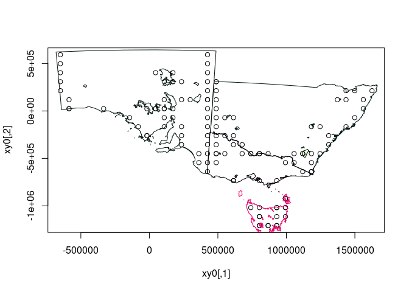
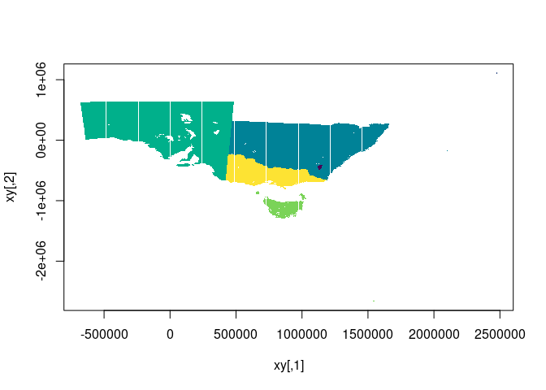
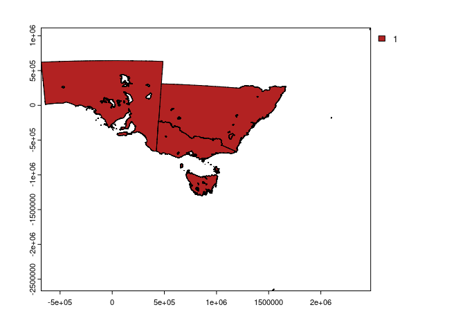

The goal of minorburn is to rasterize without materializing any pixel values.
This is an expression of my “cell abstraction” fasterize/issues/11.
- name the package
- move to cpp11
- rasterize lines and points fasterize/issues/30
- formats for import (wk, geos, grd, rct, triangles etc.)
- streaming with wkb/xy unpack with wk
- provide output options (see next)
- copy logic from fasterize, and remove Armadillo array handling
- remove use of raster objects, in favour of input extent and dimension
- remove all trace of the raster package
- implement return of the ‘yline, xpix’ and polygon ID info to user (see below)
- make return of ylin,xpix structure efficient (CollectorList.h ftw)
Outputs
Currently we get a list of triplets, so examples are unlist this to a 3-column matrix (and add 1).
- two options, record presence of polygon OR ID of polygon
- a row-indexed (yline) set of edge instances (start, end xpix) along scanlines with the two options
- tools to format this meaningfully, and plot lazily (see example for quick plot)
- tools to materialize as actual raster data
I wanted this facility a long time, and tried to get discussion on it and tried to implement it. I also found this real world example, discussed in PROJ for very fast lookup for large non-materialized (highly compressed) grids by Thomas Knudsen:
https://github.com/OSGeo/PROJ/issues/1461#issuecomment-491501992
Installation
You can install the development version of minorburn like so:
remotes::install_github("hypertidy/minorburn")Example
This is a basic example, this is fast, and shows that it works. See the todo list above.
pols <- silicate::inlandwaters
library(vaster)
#>
#> Attaching package: 'vaster'
#> The following object is masked from 'package:stats':
#>
#> ts
## define a raster (xmin, xmax, ymin, ymax), (ncol, nrow)
ext <- unlist(lapply(silicate::sc_vertex(pols), range))
dm <- c(500, 400)
r <- minorburn:::laserize(pols, extent = ext,
dimension = dm)
## our index is triplets of start,end,line where the polygon edge was detected -
## this essentially an rle by scanline of start,end polygon coverage
index <- matrix(unlist(r, use.names = F), ncol = 3L, byrow = TRUE) + 1 ## plus one because 0-index internally
cr <- do.call(rbind, apply(index, 1, \(.x) cbind(seq(.x[1], .x[2]), .x[3])))
lcells_all <- sort(vaster::cell_from_row_col(dm, cr[,2], cr[,1]))
plot(silicate::PATH0(pols))
points(xy_from_cell(dm, ext, lcells_all), pch = ".")
str(index)
#> num [1:779, 1:3] 291 288 286 286 286 286 290 286 287 287 ...
## convert to cells
cells <- vaster::cell_from_row_col(dm, index[,c(3, 3)], index[,1:2])
str(cells)
#> num [1:1558] 80291 80788 81286 81786 82286 ...It scales to very large tasks, less than a second for 250000x200000 dimension above, with 35Mb in memory output.
The following is inefficient, but shows that we get the right result.
plot(vaster::xy_from_cell(dm, ext, cells))
## now go inefficient, this is every column,row index, then converted to cell, converted to xy
cr <- do.call(rbind, apply(index, 1, \(.x) cbind(seq(.x[1], .x[2]), .x[3])))
points(xy <- vaster::xy_from_cell(dm, ext, vaster::cell_from_row_col(dm, cr[,2], cr[,1])), pch = ".", col = "darkgrey")
r <- terra::rast(cbind(xy, 0), type = "xyz")
r[terra::cellFromXY(r, xy)] <- 1
terra::plot(r ,col = "firebrick")
plot(silicate::SC0(pols), add = TRUE)
Code of Conduct
Please note that the minorburn project is released with a Contributor Code of Conduct. By contributing to this project, you agree to abide by its terms.